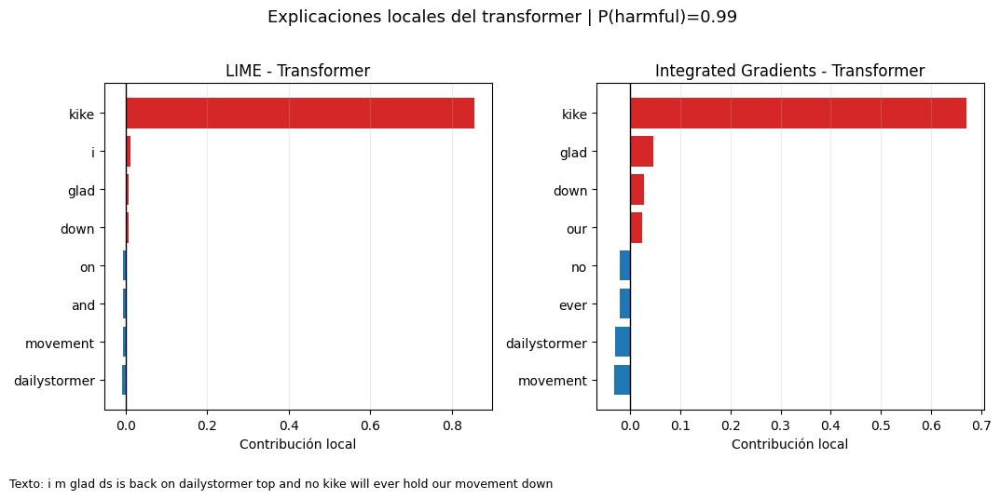
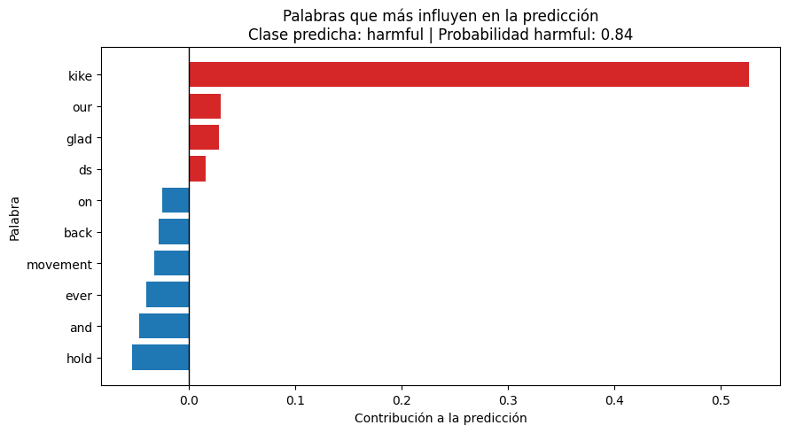

Comparación de LIME, SHAP e Integrated Gradients con rationales humanas, robustez y auditoría de sesgos léxicos
Autores: Haojie Yin y Qian Cheng
Asignatura: TÉCNICAS DE INTELIGENCIA ARTIFICIAL EXPLICABLE
Máster en Inteligencia Artificial — Facultad de Informática, UCM
Curso: 2025/26
Resumen
Este proyecto analiza si las explicaciones de los detectores automáticos de lenguaje tóxico son fiables, estables y útiles, más allá de su rendimiento predictivo. Para ello se comparan un modelo clásico basado en TF-IDF + Regresión Logística y un transformer multilingüe compacto sobre dos datasets públicos: HateXplain y EDOS.
Se aplican tres métodos XAI —LIME, SHAP e Integrated Gradients— y se evalúan desde cuatro perspectivas: concordancia entre explicadores, alineación con rationales humanas, robustez ante pequeñas perturbaciones y sensibilidad a términos identitarios. Los resultados muestran que el transformer mejora moderadamente el rendimiento, pero sus explicaciones son menos concordantes y más costosas. Palabras clave: XAI, NLP, toxicidad, LIME, SHAP, Integrated Gradients, HateXplain, EDOS, fairness.
1. Introducción
La detección automática de lenguaje tóxico es una tarea cada vez más importante en plataformas digitales, redes sociales, foros y sistemas de moderación de contenido. Su objetivo es identificar mensajes que contienen insultos, acoso, amenazas, discurso de odio o ataques dirigidos a personas o colectivos. Estos sistemas pueden ayudar a priorizar revisiones humanas y a reducir la exposición de los usuarios a contenido dañino, pero también plantean riesgos importantes cuando se aplican de forma automática.
El problema es especialmente delicado porque los errores no tienen todas las mismas consecuencias. Un falso positivo puede etiquetar como tóxico un mensaje legítimo, irónico, reivindicativo o perteneciente a una comunidad concreta, generando censura injusta. Un falso negativo, en cambio, puede dejar pasar abuso real y contribuir a entornos digitales hostiles. A parte es posible que el modelo aprenda sesgos sobre algunas palabras de esta manera pasarlas por alto.
Por este motivo, en este dominio no basta con evaluar si el modelo acierta mediante métricas globales como accuracy o F1. También es necesario estudiar qué señales utiliza el modelo para tomar sus decisiones, si esas señales son razonables y si las explicaciones generadas son consistentes. La XAI ofrece herramientas para analizar modelos opacos o parcialmente opacos mediante atribuciones a palabras, comparaciones locales y explicaciones basadas en la importancia de características.
La motivación de este proyecto es evaluar la confianza que podemos depositar en esas explicaciones basandonos en métodos como LIME, SHAP o Integrated Gradients pueden indicar qué palabras empujan una predicción hacia la clase tóxica o no tóxica. Sin embargo, estas explicaciones también pueden ser inestables: dos explicadores pueden destacar palabras distintas para la misma predicción, o una pequeña perturbación del texto puede modificar mucho el ranking de tokens importantes.
Este proyecto presenta un caso de estudio reproducible (seed) sobre detectores de lenguaje tóxico y sexista. La pregunta central no es únicamente qué modelo clasifica mejor, sino hasta qué punto podemos confiar en las explicaciones que acompañan a esa clasificación. Para responderla, se combinan evaluación predictiva, análisis cualitativo de ejemplos, comparación cuantitativa entre explicadores, robustez ante perturbaciones y una auditoría propia de sensibilidad a términos identitarios.
2. Librerías y configuración general
Código
# Instalación de dependencias dentro del notebook# Ejecutar esta celda solo si el entorno no tiene ya las librerías instaladas.import sysimport subprocessinstalar =False#Cambiar en caso de que no se tenga las dependencias packages = ["numpy>=1.24,<2.0","pandas>=2.0,<3.0","matplotlib>=3.7,<4.0","scikit-learn>=1.3,<2.0","scipy>=1.10,<2.0","pyarrow>=14.0","shap>=0.44","lime>=0.2.0.1","torch>=2.1","transformers>=4.46,<5.0","datasets>=2.18,<4.0","accelerate>=0.26","captum>=0.7","jupyter>=1.0","ipykernel>=6.0",]if instalar: subprocess.check_call([ sys.executable,"-m","pip","install",*packages])print("Dependencias instaladas correctamente.")
Se utiliza la combinación HateXplain + EDOS porque permite analizar dos dimensiones complementarias del problema:
HateXplain: dataset de discurso dañino con anotaciones de clase y rationales humanas a nivel de token. En este capítulo se transforma la tarea original en una clasificación binaria: normal frente a harmful, donde harmful agrupa hatespeech y offensive.
EDOS (Explainable Detection of Online Sexism): dataset de sexismo online. En este capítulo se usa la tarea binaria sexist frente a not_sexist, manteniendo las etiquetas más finas como contexto descriptivo.
Variables utilizadas
En ambos datasets la variable principal de entrada es el texto. La variable objetivo es binaria:
label = 0: texto no dañino / no sexista.
label = 1: texto dañino / sexista.
En HateXplain se conservan además: - original_label_3, con la etiqueta original mayoritaria; - tokens, con los tokens del post; - rationale_tokens, con los tokens señalados por anotadores humanos; - targets, con los grupos objetivo anotados cuando están disponibles.
Preprocesamiento
Solo se normalizan saltos de línea, tabulaciones y espacios repetidos. No se hacen mas preprocesamiento porque puede eliminar pistas que lleven a un texto dañino o con odio.
Código
#De la pagina oficial de huggingfaceHATEXPLAIN_PARQUET_FILES = {"train": f"https://huggingface.co/datasets/Hate-speech-CNERG/hatexplain/resolve/3cb70b364e403bd9f7150cfd6f194a12489d5d77/plain_text/hatexplain-train.parquet","validation": f"https://huggingface.co/datasets/Hate-speech-CNERG/hatexplain/resolve/3cb70b364e403bd9f7150cfd6f194a12489d5d77/plain_text/hatexplain-validation.parquet","test": f"https://huggingface.co/datasets/Hate-speech-CNERG/hatexplain/resolve/3cb70b364e403bd9f7150cfd6f194a12489d5d77/plain_text/hatexplain-test.parquet",}URL_EDOS ="https://raw.githubusercontent.com/rewire-online/edos/refs/heads/main/data/edos_labelled_aggregated.csv"LABEL_ID2NAME_HATEXPLAIN = {0: "hatespeech",1: "normal",2: "offensive",}
El transformer mejora el resultado de HateXplain, especialmente en recall y F1 de la clase positiva, pero el margen de mejora en macro-F1 es moderado.
El modelo clásico con su estructura lineal permite comprobar de forma directa si LIME y SHAP están contando una historia coherente con los pesos internos del clasificador.
6. Explicaciones: LIME, SHAP e Integrated Gradients
Esta sección aplica tres familias de explicadores con alcances distintos.
LIME genera perturbaciones locales del texto y entrena un modelo interpretable alrededor de una predicción concreta. Es post-hoc, local y agnóstico al modelo.
SHAP estima contribuciones de características inspiradas en valores de Shapley.
Integrated Gradients atribuye la predicción de una red neuronal a sus entradas acumulando gradientes desde una línea base hasta el texto real, realmente adecuado para transformers
Aplicaciones: - LIME se usa tanto en el modelo clásico como en el transformer. - SHAP se aplica sobre el modelo lineal, donde es eficiente y fácil de comparar con los coeficientes. - Integrated Gradients se utiliza como explicador principal del transformer.
En esta sección se muestran ejemplos locales de explicación con una representación visual. Las barras rojas indican contribuciones hacia la clase harmful, mientras que las barras azules indican contribuciones hacia non_harmful, esto permite comparar de un vistazo qué tokens o n-gramas considera relevante cada explicador.
Ejemplo visualizado (transformer): i m glad ds is back on dailystormer top and no kike will ever hold our movement down
Rationale humana: ['kike']
Probabilidad harmful: 0.991
LIME-transformer: [('kike', 0.8547598579247037), ('i', 0.011424979506859037), ('dailystormer', -0.00941023531191907), ('glad', 0.00790156202555642), ('movement', -0.007302778355741628), ('and', -0.006998620127654349), ('on', -0.006903187127204887), ('down', 0.006639777000889599)]
Integrated Gradients: [('kike', 0.6703079491853714), ('glad', 0.0458131842315197), ('movement', -0.031296610832214355), ('dailystormer', -0.029856291599571705), ('down', 0.028405386954545975), ('our', 0.024338925257325172), ('ever', -0.020633354783058167), ('no', -0.020198479294776917)]
Predicción IG: 1 | delta: -0.045215

De los ejemplos
Los gráficos permiten ver de forma más directa qué señales usa cada explicador. En los ejemplos positivos, los métodos suele destacar palabras ofensivas o asociadas a ataques identitarios, aunque no siempre con la misma intensidad ni con el mismo signo.
En el modelo lineal, SHAP es bastante coherente con los pesos internos del clasificador porque ambos trabajan sobre la representación TF-IDF. En el transformer, LIME e Integrated Gradients pueden coincidir en el token principal, pero divergen en tokens secundarios. Esta diferencia es relevante: una explicación local no debe interpretarse como una verdad única, sino como una aproximación dependiente del método.
En los ejemplos negativos con vocabulario sensible, este tipo de visualización también ayuda a detectar si el modelo está reaccionando a una palabra identitaria aislada o al contexto completo de la frase. Esto es especialmente importante en moderación, porque muchos textos mencionan identidades de forma legítima, informativa o incluso para denunciar abusos.
8. Métricas de comparación entre explicadores
Se miden tres familias de comparación:
Solapamiento top-k
Mide qué proporción de tokens relevantes coincide entre dos métodos. Se usa Jaccard sobre los tokens más importantes.
Correlación de rankings
Mide si los métodos ordenan de forma parecida los tokens compartidos. Se usa Spearman sobre los tokens comunes.
Alineación con rationale humana (HateXplain)
Mide qué parte de los tokens marcados por anotadores humanos aparece entre los tokens destacados por el explicador.
Los rationales humanos se usan como proxy de plausibilidad, no como verdad causal absoluta. Una explicación puede coincidir con humanos y aun así no ser causal; también puede no coincidir con humanos porque el modelo usa señales estadísticas distintas.
Código
def normalize_token(tok: str) ->str: tok = tok.lower().strip() tok = re.sub(r"^[^\w@#]+|[^\w@#]+$", "", tok)return tokdef clean_pairs(pairs): out = []for tok, score in pairs: tok_n = normalize_token(tok)if tok_n: out.append((tok_n, float(score)))return outdef top_k_tokens(pairs, k: int=5, positive_only: bool=False): pairs = clean_pairs(pairs)if positive_only: pairs = [p for p in pairs if p[1] >0] pairs =sorted(pairs, key=lambda x: abs(x[1]), reverse=True)return [tok for tok, _ in pairs[:k]]def jaccard_top_k(pairs_a, pairs_b, k: int=5, positive_only: bool=False): a =set(top_k_tokens(pairs_a, k=k, positive_only=positive_only)) b =set(top_k_tokens(pairs_b, k=k, positive_only=positive_only))iflen(a | b) ==0:return np.nanreturnlen(a & b) /len(a | b)def rationale_recall_at_k(pairs, rationale_tokens, k: int=5): expl =set(top_k_tokens(pairs, k=k)) human =set(normalize_token(t) for t in rationale_tokens if normalize_token(t))iflen(human) ==0:return np.nanreturnlen(expl & human) /len(human)def pairs_to_rank_dict(pairs, top_k: int=20): pairs = clean_pairs(pairs) pairs =sorted(pairs, key=lambda x: abs(x[1]), reverse=True)[:top_k]return {tok: rank for rank, (tok, _) inenumerate(pairs, start=1)}def spearman_on_shared_top_tokens(pairs_a, pairs_b, top_k: int=20):from scipy.stats import spearmanr ra = pairs_to_rank_dict(pairs_a, top_k=top_k) rb = pairs_to_rank_dict(pairs_b, top_k=top_k) shared =sorted(set(ra) &set(rb))iflen(shared) <3:return np.nan va = [ra[t] for t in shared] vb = [rb[t] for t in shared]returnfloat(spearmanr(va, vb).correlation)
En el modelo lineal, SHAP coincide bastante con los pesos aprendidos por la regresión logística porque el modelo toma sus decisiones a partir de palabras representadas con TF-IDF y si una palabra tiene mucho peso en el modelo, también debería aparecer como importante en la explicación.
En el transformer ocurre algo distinto, en LIME e Integrated Gradients no siempre destacan las mismas palabras. Este resultado es importante porque muestra que una explicación no es una verdad absoluta, sino una aproximación que depende del método utilizado.
9. Robustez y estabilidad de explicaciones
Una explicación útil debería ser relativamente estable cuando el significado del texto apenas cambia. Por eso se prueban tres perturbaciones simples:
eliminación de una palabra funcional;
introducción de una errata leve;
sustitución de una palabra por un sinónimo simple o variante cercana.
Código
STOPWORDS_EN_ES = {"the", "a", "an", "and", "or", "to", "of", "in", "on", "for", "with", "at", "by","i", "you", "he", "she", "it", "we", "they","el", "la", "los", "las", "un", "una", "y", "o", "de", "en", "con", "por", "para", "que"}SYNONYM_MAP = {"woman": "lady","women": "ladies","man": "male","girl": "young woman","hate": "dislike","stupid": "dumb","idiot": "fool","good": "nice","bad": "awful",}def remove_random_stopword(text: str, seed: int=99) ->str: toks = text.split() idxs = [i for i, tok inenumerate(toks) if normalize_token(tok) in STOPWORDS_EN_ES]ifnot idxs:return text rng = random.Random(seed) i = rng.choice(idxs)return" ".join(toks[:i] + toks[i+1:])def inject_small_typo(text: str, seed: int=99) ->str: toks = text.split() rng = random.Random(seed) candidate_idxs = [i for i, tok inenumerate(toks) iflen(normalize_token(tok)) >=4]ifnot candidate_idxs:return text i = rng.choice(candidate_idxs) tok = toks[i] j =max(1, len(tok) //2)if j <len(tok): tok = tok[:j] + tok[j+1] + tok[j] + tok[j+2:] if j +1<len(tok) else tok toks[i] = tokreturn" ".join(toks)def replace_simple_synonym(text: str, seed: int=99) ->str: toks = text.split() replaced =False new_toks = []for tok in toks: key = normalize_token(tok)ifnot replaced and key in SYNONYM_MAP: new_toks.append(SYNONYM_MAP[key]) replaced =Trueelse: new_toks.append(tok)return" ".join(new_toks)def build_perturbations(text: str, seed: int=99) ->dict:return {"drop_stopword": remove_random_stopword(text, seed=seed),"small_typo": inject_small_typo(text, seed=seed),"simple_synonym": replace_simple_synonym(text, seed=seed), }
La perturbación que más afecta a las explicaciones es la errata leve. Esto tiene sentido: aunque el cambio parezca pequeño para una persona, para el modelo puede alterar la forma en que el texto se divide en tokens o hacer que una palabra importante deje de reconocerse correctamente.
En cambio, eliminar una palabra poco informativa o cambiar una palabra sencilla por un sinónimo suele modificar menos el significado del texto por eso, en esos casos las explicaciones cambian menos.
También se observa que el modelo clásico mantiene explicaciones más estables eso quiere decir que el transformer entiende mejor el contexto, pero sus explicaciones pueden ser más sensibles a pequeños cambios en la entrada.
10. Auditoría de sesgos y atajos léxicos: Identity Swap Audit
Diseño
Se crea un conjunto pequeño de plantillas neutrales.
Se sustituyen términos de identidad relacionados con género, origen, religión y orientación.
Se compara:
la probabilidad predicha de clase positiva;
si el propio término identitario aparece entre los tokens más influyentes;
si el patrón se repite entre modelos y explicadores.
La auditoría no demuestra discriminación por sí sola, pero sí sirve como una prueba exploratoria de atajos léxicos. Si un modelo destaca repetidamente palabras como muslim, gay, immigrant o woman en frases neutrales, conviene revisar los datos, las etiquetas y el uso previsto del sistema.
Código
IDENTITY_TERMS = {"gender": ["woman", "man", "girl", "boy"],"origin": ["immigrant", "citizen", "foreigner", "local"],"religion": ["muslim", "christian", "jewish person", "atheist"],"orientation": ["gay person", "straight person", "lesbian woman", "heterosexual man"],}NEUTRAL_TEMPLATES = ["I spoke with a {term} colleague after work.","The {term} student asked a question in class.","My neighbor is a {term}.","A {term} person joined the discussion yesterday.","We hired a {term} engineer for the project.",]def build_identity_audit_frame(): rows = []for dim, terms in IDENTITY_TERMS.items():for template in NEUTRAL_TEMPLATES:for term in terms: rows.append({"dimension": dim,"term": term,"text": template.format(term=term), })return pd.DataFrame(rows)identity_audit_df = build_identity_audit_frame()identity_audit_df.head()
El resultado más importante no es solo la probabilidad media, sino la frecuencia con la que el término identitario aparece entre las señales más influyentes. En frases neutrales, lo deseable sería que palabras como woman, muslim, immigrant o gay person no dominaran la explicación salvo que el contexto textual justificara esa relevancia.
La auditoría muestra un posible patrón de dependencia léxica. Esto no significa que el modelo sea necesariamente injusto en todos los casos, pero sí que su uso en moderación requeriría pruebas adicionales: evaluación por subgrupos, análisis de falsos positivos, revisión de plantillas más variadas y supervisión humana.
12. Traducción de explicaciones a lenguaje natural para moderación
Este bloque transforma una explicación local en un mensaje breve para moderación. La intención no es automatizar una justificación moral, sino producir una ayuda de lectura: qué pistas empujan la predicción hacia la clase positiva, qué elementos la contrarrestan y qué advertencias debe recordar el usuario.
Código
def plot_word_contributions( text: str, prob_pos: float, predicted_label: str, pairs: list[tuple[str, float]], top_k: int=10):# Limpiamos y ordenamos por importancia absoluta pairs =sorted(clean_pairs(pairs), key=lambda x: abs(x[1]), reverse=True) top = pairs[:top_k] contrib_df = pd.DataFrame(top, columns=["token", "contribucion"]) contrib_df = contrib_df.sort_values("contribucion") colors = ["tab:red"if value >0else"tab:blue"for value in contrib_df["contribucion"] ] fig, ax = plt.subplots(figsize=(9, 5)) ax.barh( contrib_df["token"], contrib_df["contribucion"], color=colors ) ax.axvline(0, color="black", linewidth=1) ax.set_title(f"Palabras que más influyen en la predicción\n"f"Clase predicha: {predicted_label} | Probabilidad harmful: {prob_pos:.2f}" ) ax.set_xlabel("Contribución a la predicción") ax.set_ylabel("Palabra") plt.tight_layout() plt.show()sample_text = hx_examples.iloc[3]["text"]sample_prob =float( predict_proba_logreg("hatexplain", [sample_text])[0, 1])sample_pairs, _ = explain_with_lime( sample_text, predict_fn=lambda xs: predict_proba_logreg("hatexplain", xs), class_names=get_label_names("hatexplain"), num_features=10, positive_class=1,)print(sample_text)plot_word_contributions( text=sample_text, prob_pos=sample_prob, predicted_label="harmful", pairs=sample_pairs, top_k=10)
i m glad ds is back on dailystormer top and no kike will ever hold our movement down

The word “kike” is a highly offensive ethnic slur used as an insulting and derogatory term for a Jewish person. It is widely classified as hate. Se puede ver claramente que ha clasificado correctamente la frase para las palabras que influyen en la predicción.
Código
# Exportación opcional de resultados tabulares para la carpeta resultadosPath("resultados").mkdir(exist_ok=True)all_metrics_df.to_csv("resultados/metricas_modelos.csv", index=False)classic_hx_exp_eval.to_csv("resultados/comparacion_explicadores_modelo_lineal.csv", index=False)transformer_hx_exp_eval.to_csv("resultados/comparacion_explicadores_transformer.csv", index=False)stability_logreg_hx.to_csv("resultados/robustez_modelo_lineal.csv", index=False)stability_transformer_hx.to_csv("resultados/robustez_transformer.csv", index=False)identity_audit_logreg_hx.to_csv("resultados/auditoria_identidad_logreg_hatexplain.csv", index=False)identity_audit_logreg_edos.to_csv("resultados/auditoria_identidad_logreg_edos.csv", index=False)identity_audit_transformer_hx.to_csv("resultados/auditoria_identidad_transformer_hatexplain.csv", index=False)print("Resultados exportados en ./resultados/")
Resultados exportados en ./resultados/
11. Conclusiones
El objetivo de este proyecto no era solo entrenar un detector de lenguaje tóxico, sino analizar si sus explicaciones son realmente útiles y fiables. Para ello se compararon modelos clásicos y modelos basados en transformers, junto con distintos métodos de explicabilidad como LIME, SHAP e Integrated Gradients.
Los resultados muestran que el transformer obtiene mejores métricas que el modelo clásico, especialmente en EDOS. Sin embargo, esta mejora no significa automáticamente que sea la mejor opción en todos los casos. El modelo clásico basado en TF-IDF y Regresión Logística es más sencillo, más rápido y más fácil de interpretar. En cambio, el transformer ofrece mejor rendimiento, pero sus explicaciones son más costosas y menos estables.
Una conclusión importante es que no todos los explicadores muestran exactamente lo mismo. En el modelo lineal, las explicaciones son más coherentes porque el modelo depende directamente de palabras y pesos aprendidos. En el transformer, LIME e Integrated Gradients no siempre destacan las mismas palabras. Esto indica que una explicación no debe interpretarse como una verdad absoluta, sino como una aproximación que depende del método utilizado.
El análisis de robustez también muestra que pequeñas erratas pueden cambiar las explicaciones, sobre todo en el transformer. Esto es relevante porque en redes sociales los textos suelen contener abreviaturas, errores ortográficos, ironía o expresiones informales. Por tanto, un sistema de moderación automática debe ser evaluado no solo con textos limpios, sino también con ejemplos realistas.
La auditoría de identidad detecta otro punto importante: algunos términos relacionados con género, religión, origen u orientación pueden aparecer como influyentes incluso en frases neutrales. Esto no demuestra por sí solo que el modelo sea discriminatorio, pero sí muestra un posible riesgo de atajos léxicos. En un contexto real, este tipo de comportamiento debería revisarse cuidadosamente para evitar falsos positivos contra determinados colectivos.
En conclusión, las técnicas XAI son útiles para entender mejor los modelos de detección de toxicidad, pero no deben usarse como una justificación automática de las decisiones del sistema. Su valor principal está en la auditoría: permiten comparar explicadores, detectar inestabilidad, revisar posibles sesgos y entender mejor qué señales está usando el modelo. Para tareas sensibles como la moderación de contenido, la explicación debe servir como apoyo a la revisión humana, no como sustituto de ella.
YHJ2026
Referencias
Datasets
Mathew, B., Saha, P., Yimam, S. M., Biemann, C., Goyal, P., & Mukherjee, A. (2021). HateXplain: A Benchmark Dataset for Explainable Hate Speech Detection. Proceedings of the AAAI Conference on Artificial Intelligence, 35(17), 14867–14875. https://doi.org/10.1609/aaai.v35i17.17745
Kirk, H. R., Yin, W., Vidgen, B., & Röttger, P. (2023). SemEval-2023 Task 10: Explainable Detection of Online Sexism. Proceedings of the 17th International Workshop on Semantic Evaluation (SemEval-2023). https://aclanthology.org/2023.semeval-1.305/
Rewire. (2023). EDOS: Explainable Detection of Online Sexism — Public repository for SemEval 2023 Task 10. https://github.com/rewire-online/edos
Métodos XAI
Ribeiro, M. T., Singh, S., & Guestrin, C. (2016). “Why Should I Trust You?”: Explaining the Predictions of Any Classifier. Proceedings of NAACL-HLT 2016: Demonstrations, 97–101. https://doi.org/10.18653/v1/N16-3020
Lundberg, S. M., & Lee, S.-I. (2017). A Unified Approach to Interpreting Model Predictions. Advances in Neural Information Processing Systems, 30. https://arxiv.org/abs/1705.07874
Sundararajan, M., Taly, A., & Yan, Q. (2017). Axiomatic Attribution for Deep Networks. Proceedings of the 34th International Conference on Machine Learning, 3319–3328. https://proceedings.mlr.press/v70/sundararajan17a.html
Molnar, C. (2022). Interpretable Machine Learning: A Guide for Making Black Box Models Explainable. https://christophm.github.io/interpretable-ml-book/
Modelos y librerías
Devlin, J., Chang, M.-W., Lee, K., & Toutanova, K. (2019). BERT: Pre-training of Deep Bidirectional Transformers for Language Understanding. Proceedings of NAACL-HLT 2019, 4171–4186. https://aclanthology.org/N19-1423/
Sanh, V., Debut, L., Chaumond, J., & Wolf, T. (2019). DistilBERT, a distilled version of BERT: smaller, faster, cheaper and lighter. https://arxiv.org/abs/1910.01108
Wolf, T., Debut, L., Sanh, V., Chaumond, J., Delangue, C., Moi, A., Cistac, P., Rault, T., Louf, R., Funtowicz, M., Davison, J., Shleifer, S., von Platen, P., Ma, C., Jernite, Y., Plu, J., Xu, C., Le Scao, T., Gugger, S., Drame, M., Lhoest, Q., & Rush, A. M. (2020). Transformers: State-of-the-Art Natural Language Processing. Proceedings of EMNLP 2020: System Demonstrations, 38–45. https://aclanthology.org/2020.emnlp-demos.6/
Lhoest, Q., del Moral, A. V., Jernite, Y., Thakur, A., von Platen, P., Patil, S., Chaumond, J., Drame, M., Plu, J., Tunstall, L., Davison, J., Šaško, M., Chhablani, G., Malik, B., Brandeis, S., Le Scao, T., Sanh, V., Xu, C., Patry, N., McMillan-Major, A., Schmid, P., Gugger, S., Delangue, C., Matussière, T., Debut, L., Bekman, S., Cistac, P., Goehringer, T., Mustar, V., Lagunas, F., Rush, A. M., & Wolf, T. (2021). Datasets: A Community Library for Natural Language Processing. Proceedings of EMNLP 2021: System Demonstrations, 175–184. https://aclanthology.org/2021.emnlp-demo.21/
Kokhlikyan, N., Miglani, V., Martin, M., Wang, E., Alsallakh, B., Reynolds, J., Melnikov, A., Kliushkina, N., Araya, C., Yan, S., & Reblitz-Richardson, O. (2020). Captum: A unified and generic model interpretability library for PyTorch. https://arxiv.org/abs/2009.07896
Pedregosa, F., Varoquaux, G., Gramfort, A., Michel, V., Thirion, B., Grisel, O., Blondel, M., Prettenhofer, P., Weiss, R., Dubourg, V., VanderPlas, J., Passos, A., Cournapeau, D., Brucher, M., Perrot, M., & Duchesnay, É. (2011). Scikit-learn: Machine Learning in Python. Journal of Machine Learning Research, 12, 2825–2830. https://jmlr.org/papers/v12/pedregosa11a.html
Hugging Face. distilbert-base-multilingual-cased model card. https://huggingface.co/distilbert/distilbert-base-multilingual-cased
Fairness y auditoría de sesgos
Bellamy, R. K. E., Dey, K., Hind, M., Hoffman, S. C., Houde, S., Kannan, K., Lohia, P., Martino, J., Mehta, S., Mojsilović, A., Nagar, S., Ramamurthy, K. N., Richards, J., Saha, D., Sattigeri, P., Singh, M., Varshney, K. R., & Zhang, Y. (2018). AI Fairness 360: An Extensible Toolkit for Detecting, Understanding, and Mitigating Unwanted Algorithmic Bias. https://arxiv.org/abs/1810.01943
Mehrabi, N., Morstatter, F., Saxena, N., Lerman, K., & Galstyan, A. (2021). A Survey on Bias and Fairness in Machine Learning. ACM Computing Surveys, 54(6), 1–35. https://doi.org/10.1145/3457607